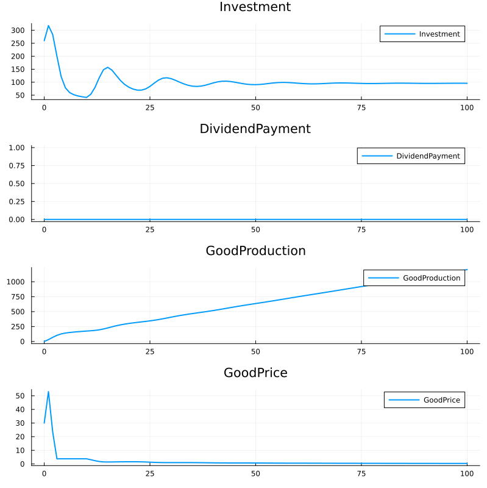

Categorical Accounting
This section describes the categorical approach to accounting, including the mathematical foundations and practical implementations.
Basic Transaction Structure
The basic transaction structure can be represented as:
$
A \to B $
where A and B are accounts.
Basic Concepts
In categorical accounting, we represent financial transactions as morphisms between objects (accounts). A simple example:
$
\begin{array}{ccc} A & \to & B \ & \to & \downarrow \ & & C \end{array} $
This shows financial flows between accounts A, B, and C.
Double Entry Bookkeeping
Double entry bookkeeping can be represented categorically as:
$
\begin{array}{ccc} Assets & \to & Liabilities \ & \to & \downarrow \ & & Equity \end{array} $
This maintains the fundamental accounting equation: Assets = Liabilities + Equity.
Mathematical Formalization
The categorical approach to accounting provides a rigorous mathematical foundation:
Objects (Accounts): Each account is an object in our category $ A, B, C \in C $
Morphisms (Flows): Financial transactions are morphisms $ f: A \to B $
Composition: Sequential transactions compose $ g \circ f: A \to C $
Invariants: Conservation laws are expressed as transformations $ \sum ini = \sum outj $
MOMASCF Structure
The MOMASCF system is represented as follows:
Objects (Accounts)
$
Accounts = { LabBank, LabLab, LabGood, ResBank, ResRes, ResGood, CapBank, CapDiv, CapGood, ComBank, ComLoan, ComDiv, ComRes, ComLab, ComGood, BankComLoan, BankComBank, BankLabBank, BankResBank, BankCapBank } $
Morphisms (Flows)
$
\begin{array}{rcl} Investment & : & ComBank \to ComRes + ComLab \ Consumption & : & Banks \to ComBank \ Dividend & : & ComBank \to CapBank \ Production & : & ComRes + ComLab \to ComGood \end{array} $
Invariants
$
\begin{array}{rcl} InvCapBank & = & AccCapBank - AccBankCapBank \ InvResBank & = & AccResBank - AccBankResBank \ InvComBank & = & AccComBank - AccBankComBank \ InvComLoan & = & AccBankComLoan - AccComLoan \ InvLabBank & = & AccLabBank - AccBankLabBank \end{array} $
Macro Invariant
$
InvMacro = InvCapBank + InvResBank + InvComBank + InvComLoan + InvLabBank $
Production Function
The production process is:
$
F(ComGood) = 1 + Scale \cdot (Lab)^a \cdot (Res)^{1-a} $
Investment Function
The investment decision process:
$
Investment = A + \frac{B}{1 + e^{-D/C}} $
Simulation Results
Key Variables Evolution

Flow Diagram
graph TD
ComBank --> ComRes
ComBank --> ComLab
ComRes & ComLab --> ComGood
LabBank & ResBank & CapBank --> ComBank
ComBank --> CapBankConservation Laws
The system maintains several conservation laws:
- Bank Account Conservation:
$
\sum \text{Bank Accounts} = \text{Constant} $
- Flow Conservation:
$
\text{Inflows} = \text{Outflows} $
- Production-Consumption Balance:
$
\text{Production} = \text{Consumption} + \text{Investment} $
Implementation
The categorical structure is implemented in the simulation code through:
- Object Implementation (State Structure):
@with_kw mutable struct State
Parameters::NamedTuple
AccLabBank::Float64 = 0.0
# ... other accounts ...
end- Morphism Implementation (State Transition):
function StateTransition(sim, state, period)
# Calculate invariances
InvCapBank = state.AccCapBank - state.AccBankCapBank
# ... other invariances ...
# Calculate flows
Investment = pars.sigA + pars.sigB / (1.0 + exp(-DemandSurplus / pars.sigC))
# ... other flows ...
end- Functor Implementation (Production):
GoodProduction = 1 + pars.ScaleProd *
state.AccComLab^pars.LabResSubstProd *
state.AccComRes^(1 - pars.LabResSubstProd)